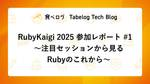

Tabelog Tech Blog
https://tech-blog.tabelog.com/
食べログの開発者による技術ブログです
フィード

カカクコムにおけるDifyエンタープライズ版の全社導入と活用ポイント 72
72
Tabelog Tech Blog
目次 目次 はじめに Dify導入の背景 エンタープライズ版の機能 マルチワークスペース SSO Kubernetesデプロイ Admin API カカクコムの事例紹介 ワークスペース設計 運用体制 アプリの公開方法 サンドボックスワークスペース Google Cloudによるインフラ構築 エンタープライズ版の運用における課題 全社導入の成果と課題 まとめ はじめに こんにちは。AIトランスフォーメーション推進部に所属している遠藤怜です。 カカクコムでは「Dify」のエンタープライズ版を全社のAI活用プラットフォームとして導入しました。 通常のDify（コミュニティ版）にはない企業向けの機能が…
1日前

食べログ多言語版のAI翻訳で73%のコスト削減とネイティブレベルの品質向上を実現した話
23
Tabelog Tech Blog
はじめに プロジェクト背景：インバウンド需要と翻訳課題 AIモデル選定：性能評価とコスト分析 実験詳細 評価方法 データセット 評価対象モデル 評価結果 翻訳対象：多様な言語アイテムの分析 代表的な5つのパターン毎のアプローチの詳細 店名 支店名 メニュータイトル メニュー説明 口コミ内容 性能改善の知見 英訳ルールとfew-shotによる基礎性能の確保 文脈情報の効果的な活用 固有名詞処理の体系化 日本語特有表現への対応 GPT-4o miniで十分な性能に持っていくための工夫 コストを節約する工夫 導入効果 今後の展開 多言語への展開 未翻訳アイテムへの対応 最新技術のキャッチアップと継続…
3日前

RubyKaigi 2025 参加レポート#2 〜世界最大級のRubyイベント！？RubyKaigi 2025に初参戦してみた！〜 3
Tabelog Tech Blog
目次 目次 はじめに RubyKaigiとは？ なんでRubyKaigiに参加したの？ 愛媛に到着！ 食べログブースをご紹介！ スポンサー企業ブースも行ってきました！ イタンジ株式会社 株式会社スマートバンク 株式会社アンドパッド その他イベントやスペース スタンプラリー 本屋 ハックスペース キッチンカー、3時のおやつ クロージング RubyKaigiに参加してみて はじめに こんにちは！食べログ開発本部ウェブ開発1部のすっさんです。4月で入社2年目になりました🌸 普段は食べログのバックエンド開発に取り組んでいます。 今回は、Rubyの世界最大級(!?)とも称されるRubyKaigi 202…
7日前

RubyKaigi 2025 参加レポート #1 〜注目セッションから見るRubyのこれから〜 2
Tabelog Tech Blog
こんにちは！ 食べログカンパニー開発本部ウェブ開発 2 部の濱口 (@machida4) です。 4 月 16 日 ~ 18 日に松山で開催された RubyKaigi 2025 に参加しました。 この記事では、RubyKaigi 2025 の注目セッションをご紹介します。 どのセッションも大変興味深いものばかりでしたが、全部盛りにするとスクロールバーが見えなくなってしまうので、特に印象に残ったセッションをいくつかピックアップします。 目次 目次 Ruby Taught Me About Encoding Under the Hood 書記素クラスタについて 感想と余談 Empowering D…
8日前

サブドメインのおくりびと 〜食べログのサブドメイン、ひとつ廃止します〜
Tabelog Tech Blog
はじめに こんにちは。食べログシステム開発本部 ウェブ開発1部 システム運用改善チームの@4palaceです。 今回は、私の所属するシステム運用改善チームで取り組んだサブドメインの廃止について事例を紹介します。 取り組みを通じて得られた学びなどを紹介します。 同じような課題に取り組むエンジニアにとって参考になれば幸いです。 目次 はじめに 食べログにおける不要なSSLサブドメインとは なぜSSLサブドメインが生まれたのか なぜいらなくなったのか あると何が困るのか 安全にサブドメインをクローズする 重要な機能が利用できない状態にならないこと 食べログのビジネスを止めないこと 移行前の準備と検証…
1ヶ月前
食べログの予約システム × 外部連携の裏側 〜開発・運用のリアル〜
Tabelog Tech Blog
こんにちは！ 食べログカンパニー 飲食店プロダクト開発部の稲葉・南野です！ 我々は食べログの予約システムと、外部システムとの連携に関する開発・運用をする業務を担当しています。 今回は外部システム連携に携わってきた二人の視点から、「食べログの予約システムにおける外部システム間連携」についてご紹介します！ 目次 目次 はじめに 食べログの予約システムにおける外部連携 なぜ食べログの予約システムで外部連携をするのか？ 飲食店側のメリット 食べログの予約システム側のメリット 食べログで実現している外部連携について 外部連携の開発における苦労・注意ポイント 調整編 相互の業務の理解が必要 ユビキタス言語…
1ヶ月前
絶対に止めない飲食店モバイルオーダーシステムの開発
Tabelog Tech Blog
こんにちは。飲食店向けモバイルオーダーシステム「食べログオーダー」のエンジニアリングマネージャーを務めています福田です。 今回は、エンジニアリングマネージャーとして、食べログオーダー開発で最もこだわっている「絶対に止めない」という取り組みについてお話しします。 目次 はじめに 飲食店モバイルオーダーシステムを取り巻く状況 外部接続周りの戦略 POSシステムとの連携 iOSアプリとプリンターの連携 食べログオーダーの印刷シーケンス 店内オペレーションのトレーサビリティ 伝えたいこと まとめ はじめに 私達が開発している飲食店モバイルオーダーシステムは、飲食店での入店〜注文〜提供〜会計という飲食店…
2ヶ月前
プロダクト開発を円滑に進めるためのコミュニケーション術
Tabelog Tech Blog
はじめに こんにちは。食べログ開発本部ウェブ開発2部でWEBエンジニアをしている向島です。 私は普段、要件や仕様決め、スケジュール調整など、一緒に開発を進める企画やデザイナーと日々連携をとりながら開発を進めています。 プロダクト開発を遅延や品質の低下なく順調に進行させるためにも、他職種とのコミュニケーションは非常に大切な要素のひとつですが、これまでの開発経験の中でコミュニケーション面において課題を感じることもありました。 今回は、日々の開発を通じて私自身が感じていたコミュニケーション上の課題と、それに対してプロジェクト全体で取り組み、効果を感じたものを紹介したいと思います。 この記事を通して、…
2ヶ月前
3社合同でモバイル勉強会を開催します！(2月26日(水)19:00〜)
Tabelog Tech Blog
こんにちは！食べログ開発本部アプリ開発部マネージャーの原です。 この度、弊社にて勉強会を開催することになりましたので、ご案内いたします。 勉強会の概要 日時: 2025年2月26日（水）19:00〜21:00 場所: 株式会社カカクコム 渋谷オフィス（渋谷パルコDGビル 18F） 参加企業: Sansan株式会社 / 株式会社アンドパッド / 株式会社カカクコム この勉強会の目的は、モバイルアプリ開発の最新技術やトレンドあるいはTipsを共有し、参加者の技術力とモチベーションを向上させることです。 また、参加者同士のネットワーキングも重視しており、新しいアイデアやコラボレーションのきっかけにな…
3ヶ月前
テスト自動化への心理的障壁がエベレストなSET1年生が記述レベルMAXな自動テストスクリプトを書けるわけがない
Tabelog Tech Blog
はじめに 課金戦士は恐怖した。必ず、テスト自動化の実装をできるようにならなければならぬと決意した。課金戦士にはコードがわからぬ。課金戦士は、QAエンジニアである。テストケースを作成し、テスト環境に弄ばれて暮して来た。けれどもテスト自動化という未知に対しては、人一倍に敏感であった。 テスト自動化への心理的障壁がエベレストなあなたも、日和山なあなたも、はじめまして。 食べログの品質管理室、SETチームに生息している課金戦士と申します(課金機能を担当している戦士ではなく、アプリゲーム課金を趣味として赤字と戦い続ける戦士です)。 ちなみにSETとは、「Software Engineer in Test…
3ヶ月前
食べログAndroidアプリの自動テスト戦略
Tabelog Tech Blog
こんにちは。食べログでAndroidアプリのテックリードをしているsadaです。 今回は食べログAndroidアプリの自動テスト戦略についてご紹介したいと思います。 目次 そもそもテストコードはなぜ必要なのか テストコードにおいて大事なこと 自動テストの信頼性 できるだけ早い段階で検出する 継続的な保守 食べログAndroidアプリの自動テスト戦略 テストコードを書く文化を根付かせる 一番欲しいフィードバックを考える バランスよく積み上げられる 実際進めてどうなったか まずはSmallテスト主軸に 次にMediumテストでカバー範囲を広げる 今後の展望 Largeテストを作り、手動テストを減ら…
3ヶ月前
食べログの生成AI活用事例を W&Bミートアップ #18で発表しました
Tabelog Tech Blog
はじめに 食べログ開発本部 技術部のデータサイエンスチームに所属する河村です。 データサイエンスチームは、データとAIを活用してビジネス成長に貢献することをミッションとしており、生成AI技術のサービス活用や業務活用に取り組んでいます。 その一環として、データサイエンスチームで行った生成AIの活用事例を、2025年1月15日に開催されたW&Bミートアップにて発表しました。 イベントの内容 イベントは2025年1月15日に渋谷スクランブルスクエアにて行われました。 私はオープニングトーク後のトップバッターでした。 参加人数は60名ほどですが、参加者との距離は近く、全員の顔が見える距離感での発表とな…
4ヶ月前
4ヶ月で1,134メソッド削除！食べログのシステムスリム化の工夫ポイント
Tabelog Tech Blog
️はじめに みなさん、こんにちは。 食べログ開発本部 ウェブ開発1部 システム運用改善チームに所属している、スギマルくんと申します。 システム運用改善チームは、特定のページや機能の開発案件は行わず、食べログの一般ユーザーや、カスタマーサポートが触れるページや機能のシステムや運用面の改善を専門としているチームです。 本日は、システム運用改善チームにて実施した、食べログのデッドメソッドを削除したプロジェクトについてお話しします。 このTabelog Tech Blogの記事を通し、多くのエンジニアの方に、食べログのシステムの現状を知ってもらいつつ、技術的負債に立ち向かうメンバーがいることを知っても…
4ヶ月前
カカクコム社のテックカンパニー、そしてAIネイティブへの道
Tabelog Tech Blog
この記事は 食べログアドベントカレンダー2024 の25日目の記事です🎅🎄 はじめに こんにちは、CTOの京和です。2024年4月にカカクコム社のCTOになりました。2019年の入社以降、毎年アドベントカレンダーを書いていますが、CTOとして投稿するのは今回が初めてです。対戦よろしくお願いします。 カカクコム社では2024年4月に新社長が就任し、新たな経営体制となりました。新社長からは「成熟企業からグロース企業へ」「保守的から革新的へ」「レガシーからモダンへ」という新しいメッセージが打ち出され、これまで培ってきた強みは残しつつも、より挑戦的で成長志向な企業へ進化するべく、様々な新しい試みにチャ…
5ヶ月前
Realtime APIを解読し音声対話の仕組みを紐解いた。常に聞いているが、常に考えてはいない。
Tabelog Tech Blog
この記事は 食べログアドベントカレンダー2024 の24日目の記事です🎅🎄 食べログ開発本部 技術部のデータサイエンスチームに所属する河村です。 データサイエンスチームは、データとAIを活用してビジネス成長に貢献することをミッションとしており、生成AI技術のサービス活用や業務活用に取り組んでいます。 その1つとして、生成AIを用いた音声対話についても注目しています。 2024年10月にOpenAIがリリースしたRealtime APIを用いて、GPT-4oの音声対話の仕組みを紐解きましたが、調べる前に思っていたことと違っている点もいくつかありました。 ユーザが話す音声をずっとAIが考えながら応…
5ヶ月前
CircleCI の爆速&低燃費化
Tabelog Tech Blog
はじめに この記事は 食べログアドベントカレンダー2024 の23日目の記事です🎄 こんにちは。食べログ開発本部 技術部 マイクロサービス化チームの栗山 a.k.a. @weakboson です。 本記事では食べログが行っているCI(継続的インテグレーション)改善の取り組みをご紹介します。CircleCI を前提としたフィーチャーや、まだ完了していない施策についても触れますのでご了承ください。 目次 はじめに 1. 背景と目的 2. 「テスト分割と並列実行」によるCIの高速化 3. Pull request が Draft のうちはCI実行を抑制してコスト節約 4. CircleCI Filt…
5ヶ月前
久しぶりにチームリーダーやってみた
Tabelog Tech Blog
この記事は 食べログアドベントカレンダー2024 の22日目の記事です。 【はじめに】 こんにちは、はじめまして。食べログ開発本部ウェブ開発1部のシステム運用改善チームでチームリーダーを務めているame001です。 今回は、久しぶりにチームリーダーを務めた経験を振り返り、そこで得た学びや成長についてお話しします。 将来チームリーダーを目指している方や現在チームリーダーをやっているけれど不安がある方へのやり方のヒントになれば幸いです。 【チームリーダーを引き受ける前までのこと】 過去何度かリーダーと名のつくポジションに就いていたこともありますが、ここ4〜5年間は主に開発チームの一員として活動して…
5ヶ月前
速い開発のためのコミュニケーションと知的謙虚さ
Tabelog Tech Blog
この記事は 食べログアドベントカレンダー2024 の21日目の記事です🎅🎄 はじめに こんにちは。食べログ開発本部、技術部部長の池上です。 今年の食べログアドベントカレンダーは『開発を圧倒的に速くする』というテーマですが、技術的な話や組織の仕組み化の話ではなくコミュニケーションや知的謙虚さといった少々曖昧なテーマについて取り上げます。 組織文化の重要性 食べログ開発本部では『開発を圧倒的に速くする』上で重要なメッセージとして 「HRTの心(Humility / Respect / Trust)を忘れない」 というメッセージも掲げており、システムや組織の仕組みのように形はなくても皆に持ってもらい…
5ヶ月前
Sansanさんと合同でスマホアプリエンジニア向けの勉強会を開催しました
Tabelog Tech Blog
この記事は 食べログアドベントカレンダー2024 の20日目の記事です🎅🎄 こんにちは。食べログ開発本部アプリ開発部マネージャーの原です。 TabelogTechBlog 編集チームとしても活動しています。 この度、Sansanさんと合同でスマホアプリエンジニア向けの勉強会を開催しました。 この記事では、勉強会開催の経緯や当日の様子、そして今後の展望についてお話ししたいと思います。 勉強会の概要 今回の勉強会は、スマホアプリ開発に携わるエンジニア同士が知見を共有し、技術的な交流を深めることを目的として開催されました。小規模ながら外部公開もしており、興味があれば誰でも参加できる勉強会です。 イベ…
5ヶ月前
新卒２年目の私が素敵な設計で素敵な仕様変更に巡り会えた件
Tabelog Tech Blog
はじめに この記事は 食べログアドベントカレンダー2024 の19日目の記事です🎅🎄 こんにちは。食べログ開発本部 ウェブ開発1部の相馬です。新卒で入社してから今年で2年目になります。 入社してチームに配属されてからは、システムの細かい改修や問い合わせがあった機能の調査をしていました。ここ最近、システムの移行作業やPoC用のテスト画面の作成といった、配属直後よりも規模が少し大きい案件を担当するようになりました。 そのような状況で、私自身の課題として浮き彫りになったのが「設計」です。設計は、エンジニアとして活躍するために必要なスキルの1つであることは皆さんもご存じでしょう。この記事では、設計の重…
5ヶ月前
ts-jestからSWCへの移行で発生するイミュータブル性と型チェックの問題について
Tabelog Tech Blog
この記事は 食べログアドベントカレンダー2024 の18日目の記事です🎅🎄 はじめまして。食べログ開発本部ウェブ開発2部FEチームの中内です。 本記事では、食べログノートで使用しているJestのトランスパイラをts-jestからSWCに移行した際、既存のテストが動作しなくなる問題と型チェックについて解説します。 食べログノートとは 2023年2月に本格展開を開始した予約管理台帳です。 食べログでネット予約をご契約いただいている店舗向けのオンライン予約台帳サービスで、電話予約や各種グルメメディアのネット予約を一元管理することで、紙台帳よりも手間なく管理することができます。 詳しくはこちらをご覧く…
5ヶ月前
音声入力×AIチャットボットで広がる新たなAI活用の可能性
Tabelog Tech Blog
この記事は 食べログアドベントカレンダー2024 の17日目の記事です🎅🎄 こんにちは。食べログ開発本部 ウェブ開発1部 Ownerチームで「食べログ求人」というサービスの開発や、食べログの営業チームが使っている業務系システムの開発を行なっている@itayaです。 今回は今話題のAIチャットボットを音声入力を用いて使うことで感じられた可能性についてお話しさせてもらいます。 音声入力を使おうと思ったきっかけ ある日、いつも通り仕事をしていると、このようなチャットが飛んできました。 私はそれまで、音声入力がスマートフォンの機能などであることは知っていたものの、実際に使ったことはありませんでした。 …
5ヶ月前
プログラムを約3200倍高速化して、社内業務のボトルネックを解消したお話
Tabelog Tech Blog
はじめに この記事は 食べログアドベントカレンダー2024 の16日目の記事です🎄 こんにちは。食べログ開発本部ウェブ開発1部 システム運用改善チーム所属の @4palaceです。 今回は、私の所属するシステム運用改善チームで、とある社内業務の処理パフォーマンスを改善した事例を紹介します。 この事例では、10日間かかっていた処理を、少しの改修で10分未満に短縮しました。 改修量としては小さくとも、大きなパフォーマンス改善を実現でき、運用業務の効率化につながりました。 個人的に興味深い例でしたので、ここで共有させていただきます。 問題の発見 月次処理が月内に終わらない！ きっかけはカスタマーサポ…
5ヶ月前
趣味のゲーム制作で気づいたこと
Tabelog Tech Blog
この記事は 食べログアドベントカレンダー2024 の15日目の記事です🎄 はじめに（なぜゲーム制作を？） こんにちは。食べログWEBエンジニアの@yabon_exeです。 本記事の大まかな主張を最初にざっくり言うと、「AIはもっと気軽に使っていいんじゃないか？」になります。 食べログで働くようになって、「カカクコムには、多種多様な趣味をお持ちのエンジニアの方が多いな」と感じることが多いです。定期的に開催される勉強会での新入社員の自己紹介では「こんな面白いことを、いつもしているのか！」と驚かされることもあります。 私自身も子供の頃からゲームが好きで、それが高じて大学から自作ゲームの開発を趣味とし…
5ヶ月前
生成AI業務活用プロジェクトの立ち上げを成功に導く三種の神器
Tabelog Tech Blog
この記事は 食べログアドベントカレンダー2024 の14日目の記事です🎅🎄 食べログ開発本部 技術部 データサイエンスチームのテックリードをしております富田です。 私は生成AI活用を推進するチーム内のユニットリーダーも兼任しており、私の専門性を活かしたトピックとして生成AI業務活用プロジェクトの立ち上げについての話を書こうと思います。 なぜ業務活用に取り組んでいるのか まず、生成AI業務活用とは何かについて説明します。 生成AI業務活用は、データサイエンスチームで進めている推進トピックの1つです。 データサイエンスチームは食べログのデータとAIの活用を推進するチームであり、データ基盤とAI基盤…
5ヶ月前
Android15（APIレベル35）への対応について
Tabelog Tech Blog
この記事は 食べログアドベントカレンダー2024 の13日目の記事です。 こんにちは。食べログAndroidアプリの保守を担当している米山です。 今回の記事では食べログで実施したAndroid15（APIレベル35）への対応についてご紹介します。 目次 はじめに 対応内容 Support for 16 KB page sizes ネイティブライブラリの使用確認 16 KBデバイスの用意 影響箇所の修正 Edge-to-edge enforcement 食べログでのEdge-to-edgeオプトアウト対応 その他 CJK variable font Android SDKのNullの扱い 最後に…
5ヶ月前
生成AIで自動テストを楽に作りたい！
Tabelog Tech Blog
この記事は 食べログアドベントカレンダー2024 の12日目の記事です🎅🎄 目次 目次 はじめに 自動テスト作成の課題 テストケースを考えることの難しさ テストコードに落とし込む作業の負担 テスト対象のコード例 RSpecでのテストコード例 自動テスト作成の課題がもたらす影響 生成AIと自動テスト 自動テスト作成の効率化を目指して 導入の条件 Difyを活用したチャットボット チャットボットの利用方法 テスト生成の障害 実装コードをそのまま送った場合の問題点 良い自動テスト生成が可能なケース プロンプトの工夫 プロンプトや対話の工夫では解決できないこと 設計の重要性 まとめ ロジックを切り出し…
5ヶ月前
つまずきから学ぶ、機能開発で回り道を減らす方法 〜トリミング機能を添えて〜
Tabelog Tech Blog
この記事は 食べログアドベントカレンダー2024 の11日目の記事です🎅🎄 こんにちは。食べログ開発本部 アプリ開発部の筒井です。普段は食べログiOSアプリの開発を担当し、日々機能改善に取り組んでおります。 私は新卒として食べログに参画してから2年目になり、今年も様々な機能開発に携わらせていただきました。本当は「全てが順風満帆で何も躓くことがない素晴らしいエンジニアになりました」という記事にしたかったのですが、現実はそう甘くありません。 この記事では恥ずかしながら今年度私が大きく遠回りをしてしまった開発経験と共に、そこから学んだ開発における回り道を減らす方法についての考えをお話しできればと思い…
5ヶ月前
開発中に感じた「ツラみ」は設計改善のチャンス~負債を生まない設計方針を立て、新規案件に活かした話~
Tabelog Tech Blog
目次 目次 はじめに 「ツラみ」の収集 「ツラみ」の分析 負債解消へのアプローチ 案件への適用 良かった点 改善点/懸念点 まとめと今後の展望 はじめに この記事は 食べログアドベントカレンダー2024 の10日目の記事です。 こんにちは。食べログ開発本部ウェブ開発2部でサーバーサイドエンジニアをしている朽木です。 食べログのサービスを提供しているシステムの歴史は長く、蓄積された技術的負債の解消は開発効率を向上させるための重要な課題です。 古いコードや仕様の不明確さが原因となり、シンプルな要件であっても一筋縄ではいかないことがしばしばあります。 既存コードの調査をしていたが、依存関係の分かりづ…
5ヶ月前
食べログのデータ基盤にdbtを導入している話
Tabelog Tech Blog
はじめに はじめまして。食べログ開発本部技術部の齋野です。早いもので入社してから4ヶ月ほどが経ちました。「データサイエンスチーム」というチームに所属しており、食べログのデータ基盤の開発、保守運用を担当しています。 現在、食べログのデータ基盤にdbt1を導入する計画が進行中です。 この記事では主にデータエンジニアリング職の方に向けて、現在稼働中であるGoogle Cloud上のデータ基盤にdbtを導入する際、移行に伴うデグレやオーバーヘッドを避けるための工夫について、食べログの事例をもとに紹介します。 稼働中のデータ基盤にdbtを導入したい SQLを効率的に書きたい、データ変換処理の依存関係やメ…
5ヶ月前